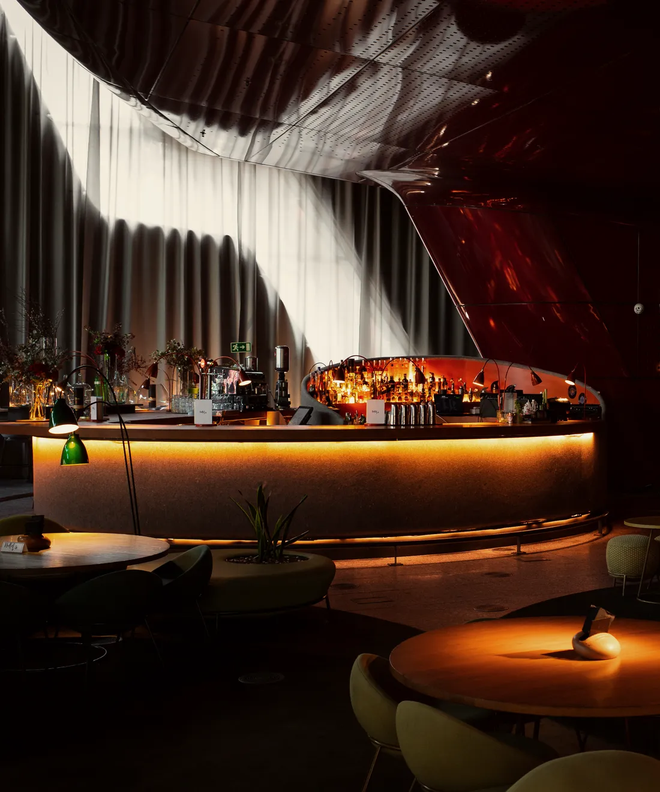
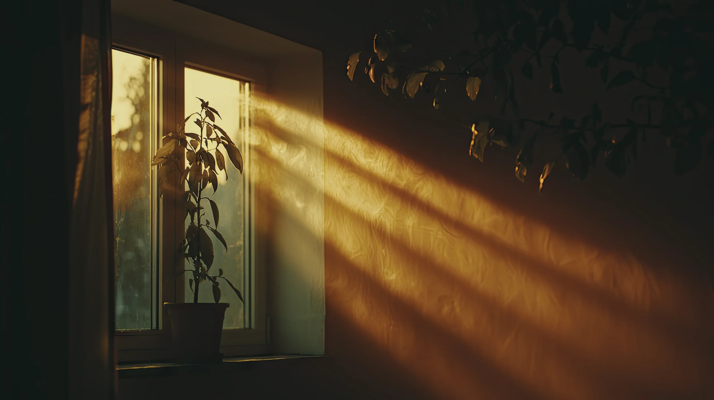
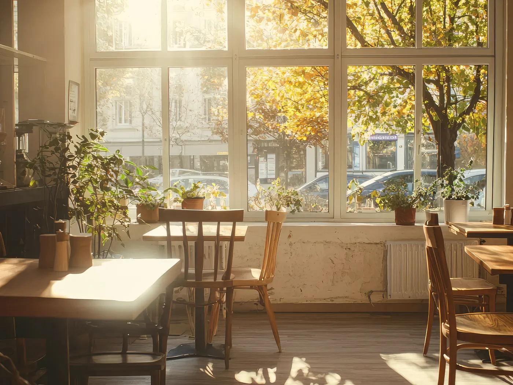
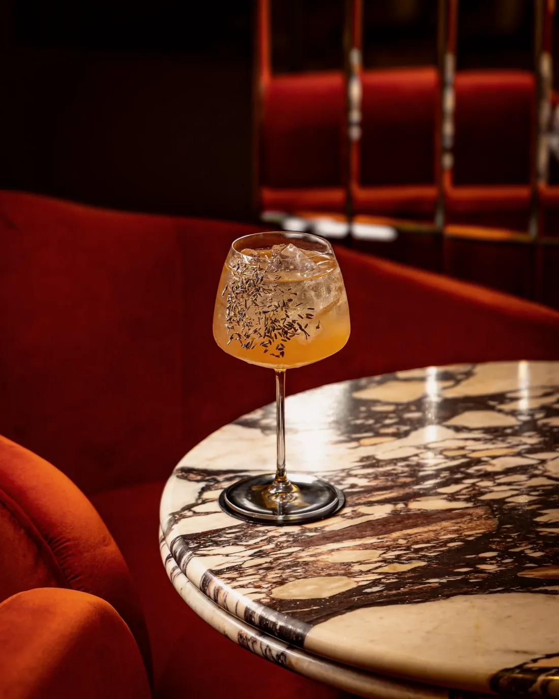
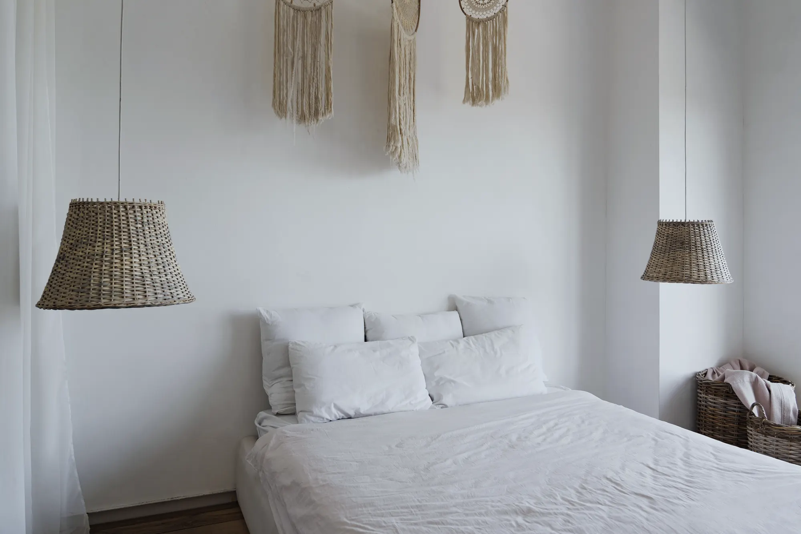

אדריכלות פנים
עשרים חללים, סיבוב אחד
דירות, ברים ומטבחים שעיצבנו בעשור האחרון, בסדר שבו הם נבנו.
לכל הפרויקטים








עשרים תמונות יושבות על סליל אחד שעולה מלמטה למעלה. הטקסט נשאר במקום, והגלילה מסובבת את הסליל ומורידה את המבט לאורכו, כך שכל תמונה מגיעה מלפנים ועוברת אחורה ונעלמת.
מתי משתמשים: תיק עבודות או גלריה של מעצב, אדריכל או צלם עם הרבה עבודות חזקות, כשרוצים לתת תחושת כמות בלי גריד. מתי לא: מעט עבודות (חוזרות על עצמן), או עמוד שצריך לקרוא בו כל פריט, כי התמונות חולפות.
הדמו כאן עיצובי-ניטרלי בכוונה. כשהמהלך נכנס לפרויקט, מיובאת רק ההתנהגות: הצבעים, הרדיוסים, הפונטים והצללים יורשים את העיצוב של אותו פרויקט.
אדריכלות פנים
דירות, ברים ומטבחים שעיצבנו בעשור האחרון, בסדר שבו הם נבנו.
לכל הפרויקטים




הקוד כאן עומד בפני עצמו. כל טוקן עיצוב נושא ברירת מחדל, מחלקות העזר של המאגר מוטמעות בו, ותגי הסקריפט מסודרים לפי הסדר הנכון. פרויקט שמגדיר --accent או --line משלו יורש אותם אוטומטית.
/* מחלקות עזר של המאגר שהרכיב הזה משתמש בהן */
.stage{padding:var(--sec, clamp(120px, 12vw, 260px)) var(--gutter, clamp(24px, 5vw, 96px));position:relative}
.stage.tight{padding-block:clamp(48px,5vw,90px)}
.stage.full{padding-inline:0}
/* B141 · סליל תמונות שהגלילה יורדת לאורכו */
.hx{position:relative}
.hx-s{display:grid;gap:clamp(24px,3vw,48px);padding:clamp(24px,4vw,64px) clamp(20px,5vw,72px)}
.hx-t{display:grid;gap:16px;justify-items:start}
.hx-k{margin:0;font-size:15px;font-weight:700;letter-spacing:.04em;color:var(--accent, #4a3aff)}
.hx-t h2{margin:0;font-size:clamp(34px,4.4vw,64px);font-weight:800;line-height:1.05;letter-spacing:-.015em;text-wrap:balance}
.hx-t p:not(.hx-k){margin:0;max-width:44ch;font-size:var(--fs-body, clamp(17px, 0.6vw + 0.7rem, 22px));line-height:1.6;color:var(--muted, #6a6d85)}
.hx-cta{display:inline-flex;align-items:center;min-height:48px;padding:12px 24px;border-radius:999px;background:var(--ink, #16182b);color:var(--bg, #f7f7fa);font-weight:700;text-decoration:none}
.hx-cta:focus-visible{outline:2px solid var(--accent, #4a3aff);outline-offset:3px}
.hx-g{display:grid;grid-template-columns:repeat(auto-fill,minmax(min(100%,160px),1fr));gap:16px}
.hx-i{margin:0}
.hx-i img{display:block;width:100%;height:auto;aspect-ratio:4/3;object-fit:cover;border-radius:12px}
.hx.is-on .hx-s{overflow-x:clip}
.hx.is-on .hx-v{position:relative;perspective:1100px}
.hx.is-on .hx-g{display:block;position:absolute;inset:0;transform-style:preserve-3d}
.hx.is-on .hx-i{position:absolute;inset:0;margin:auto;height:fit-content;width:clamp(132px,17vw,260px)}
.hx.is-on{height:420vh}
.hx.is-on .hx-s{position:sticky;top:0;height:100vh;grid-template-columns:minmax(0,1fr) minmax(0,1.5fr);align-items:center;padding-block:0;overflow:clip}
.hx.is-on .hx-v{height:100%}
@media(max-width:800px){.hx.is-on .hx-s{grid-template-columns:minmax(0,1fr);grid-template-rows:auto minmax(0,1fr);padding-block:24px 0}.hx.is-on .hx-t p:not(.hx-k){display:none}}<div class="stage"><section class="hx" data-hx><div class="hx-s">
<div class="hx-t">
<p class="hx-k">אדריכלות פנים</p>
<h2>עשרים חללים, סיבוב אחד</h2>
<p>דירות, ברים ומטבחים שעיצבנו בעשור האחרון, בסדר שבו הם נבנו.</p>
<a class="hx-cta" href="#">לכל הפרויקטים</a>
</div>
<div class="hx-v" data-view><div class="hx-g" data-scene><figure class="hx-i" data-i><img src="https://liavwebdesign-spec.github.io/motion-vault/assets/media/real/s13/proj-a.webp" width="1800" height="1200" alt="סלון כהה עם חלון גדול" loading="lazy" decoding="async" draggable="false"></figure><figure class="hx-i" data-i><img src="https://liavwebdesign-spec.github.io/motion-vault/assets/media/real/s13/room.webp" width="2200" height="1469" alt="חדר קריאה עם ספריה מוארת" loading="lazy" decoding="async" draggable="false"></figure><figure class="hx-i" data-i><img src="https://liavwebdesign-spec.github.io/motion-vault/assets/media/real/s13/proj-c.webp" width="2400" height="1026" alt="מטבח פתוח בגוון כהה" loading="lazy" decoding="async" draggable="false"></figure><figure class="hx-i" data-i><img src="https://liavwebdesign-spec.github.io/motion-vault/assets/media/real/s15/room.webp" width="1100" height="1320" alt="בר עם תאורה חמה" loading="lazy" decoding="async" draggable="false"></figure><figure class="hx-i" data-i><img src="https://liavwebdesign-spec.github.io/motion-vault/assets/media/real/s13/proj-b.webp" width="1200" height="1600" alt="פינה כהה עם מראה ועציץ" loading="lazy" decoding="async" draggable="false"></figure><figure class="hx-i" data-i><img src="https://liavwebdesign-spec.github.io/motion-vault/assets/media/real/s13/hero.webp" width="2560" height="1435" alt="אור שקיעה על קיר כהה" loading="lazy" decoding="async" draggable="false"></figure><figure class="hx-i" data-i><img src="https://liavwebdesign-spec.github.io/motion-vault/assets/media/real/s14/cafe-window.webp" width="1400" height="1050" alt="בית קפה מואר מהחלון" loading="lazy" decoding="async" draggable="false"></figure><figure class="hx-i" data-i><img src="https://liavwebdesign-spec.github.io/motion-vault/assets/media/real/s15/hero-glass.webp" width="1100" height="1375" alt="כוס קוקטייל על שולחן שיש" loading="lazy" decoding="async" draggable="false"></figure><figure class="hx-i" data-i><img src="https://liavwebdesign-spec.github.io/motion-vault/assets/media/real/s02/night-room.webp" width="2000" height="1333" alt="חדר שינה בהיר" loading="lazy" decoding="async" draggable="false"></figure><figure class="hx-i" data-i><img src="https://liavwebdesign-spec.github.io/motion-vault/assets/media/real/s13/proj-a.webp" width="1800" height="1200" alt="סלון כהה עם חלון גדול" loading="lazy" decoding="async" draggable="false"></figure><figure class="hx-i" data-i><img src="https://liavwebdesign-spec.github.io/motion-vault/assets/media/real/s13/proj-c.webp" width="2400" height="1026" alt="מטבח פתוח בגוון כהה" loading="lazy" decoding="async" draggable="false"></figure><figure class="hx-i" data-i><img src="https://liavwebdesign-spec.github.io/motion-vault/assets/media/real/s13/room.webp" width="2200" height="1469" alt="חדר קריאה עם ספריה מוארת" loading="lazy" decoding="async" draggable="false"></figure><figure class="hx-i" data-i><img src="https://liavwebdesign-spec.github.io/motion-vault/assets/media/real/s15/room.webp" width="1100" height="1320" alt="בר עם תאורה חמה" loading="lazy" decoding="async" draggable="false"></figure><figure class="hx-i" data-i><img src="https://liavwebdesign-spec.github.io/motion-vault/assets/media/real/s13/proj-b.webp" width="1200" height="1600" alt="פינה כהה עם מראה ועציץ" loading="lazy" decoding="async" draggable="false"></figure><figure class="hx-i" data-i><img src="https://liavwebdesign-spec.github.io/motion-vault/assets/media/real/s14/cafe-window.webp" width="1400" height="1050" alt="בית קפה מואר מהחלון" loading="lazy" decoding="async" draggable="false"></figure><figure class="hx-i" data-i><img src="https://liavwebdesign-spec.github.io/motion-vault/assets/media/real/s13/hero.webp" width="2560" height="1435" alt="אור שקיעה על קיר כהה" loading="lazy" decoding="async" draggable="false"></figure><figure class="hx-i" data-i><img src="https://liavwebdesign-spec.github.io/motion-vault/assets/media/real/s15/hero-glass.webp" width="1100" height="1375" alt="כוס קוקטייל על שולחן שיש" loading="lazy" decoding="async" draggable="false"></figure><figure class="hx-i" data-i><img src="https://liavwebdesign-spec.github.io/motion-vault/assets/media/real/s02/night-room.webp" width="2000" height="1333" alt="חדר שינה בהיר" loading="lazy" decoding="async" draggable="false"></figure><figure class="hx-i" data-i><img src="https://liavwebdesign-spec.github.io/motion-vault/assets/media/real/s13/proj-a.webp" width="1800" height="1200" alt="סלון כהה עם חלון גדול" loading="lazy" decoding="async" draggable="false"></figure><figure class="hx-i" data-i><img src="https://liavwebdesign-spec.github.io/motion-vault/assets/media/real/s13/room.webp" width="2200" height="1469" alt="חדר קריאה עם ספריה מוארת" loading="lazy" decoding="async" draggable="false"></figure></div></div>
</div></section></div>(function(){
function mod(v,n){return((v%n)+n)%n;}
function ss(a,b,x){const t=Math.max(0,Math.min(1,(x-a)/(b-a)));return t*t*(3-2*t);}
function mv3(root,o){
if(matchMedia("(prefers-reduced-motion:reduce)").matches)return;
const view=root.querySelector("[data-view]"),scene=root.querySelector("[data-scene]"),all=[...root.querySelectorAll("[data-i]")];
const phone=innerWidth<800,items=phone&&o.phoneN?all.slice(0,o.phoneN):all;
all.slice(items.length).forEach(e=>e.remove());
root.classList.add("is-on");
const a={N:items.length,items,root,view,scene,phone,p:o.p0||0,q:o.q0||0,t:0,mx:0,my:0,w:1,h:1};
let tp=a.p,tq=a.q,vp=0,vq=0,dn=false,lx=0,ly=0,last=0,idle=0,raf=0,seen=false,mxT=0,myT=0,first=true;
const ease=o.ease||.09;
function sp(){const r=root.getBoundingClientRect(),d=r.height-innerHeight;return d>0?Math.min(1,Math.max(0,-r.top/d)):0;}
function size(){a.w=view.clientWidth||1;a.h=view.clientHeight||1;if(o.size)o.size(a);kick();}
function frame(now){raf=0;if(!seen)return;
const dt=Math.min(.05,last?(now-last)/1000:.016);last=now;a.t+=dt;
if(o.range){const g=o.range(a);tp=g[0]+(g[1]-g[0])*sp();if(first){a.p=tp;first=false;}}
if(o.drag&&!dn){tp+=vp;tq+=vq;vp*=.94;vq*=.94;if(idle>0)idle-=dt;else if(o.auto)tp+=o.auto*dt;}
if(o.qMax)tq=Math.max(-o.qMax,Math.min(o.qMax,tq));
a.p+=(tp-a.p)*ease;a.q+=(tq-a.q)*ease;a.mx+=(mxT-a.mx)*.06;a.my+=(myT-a.my)*.06;
if(o.frame)o.frame(a);
for(let i=0;i<a.N;i++)o.place(items[i],i,a);
if(o.auto||o.always||dn||Math.abs(tp-a.p)>.0004||Math.abs(vp)>.00005||Math.abs(mxT-a.mx)>.002||Math.abs(myT-a.my)>.002)raf=requestAnimationFrame(frame);}
function kick(){if(!raf&&seen){last=0;raf=requestAnimationFrame(frame);}}
new IntersectionObserver(([e])=>{seen=e.isIntersecting;if(seen)kick();},{rootMargin:"120px"}).observe(root);
new ResizeObserver(size).observe(view);
addEventListener("scroll",kick,{passive:true});
root.addEventListener("pointermove",e=>{const r=view.getBoundingClientRect();mxT=((e.clientX-r.left)/r.width-.5)*2;myT=((e.clientY-r.top)/r.height-.5)*2;kick();});
if(o.drag){
view.addEventListener("pointerdown",e=>{dn=true;lx=e.clientX;ly=e.clientY;vp=vq=0;view.style.cursor="grabbing";try{view.setPointerCapture(e.pointerId);}catch(_){}kick();});
view.addEventListener("pointermove",e=>{if(!dn)return;const dx=e.clientX-lx,dy=e.clientY-ly;lx=e.clientX;ly=e.clientY;vp=dx*o.drag;tp+=vp;if(o.dragQ){vq=dy*o.dragQ;tq+=vq;}});
const up=()=>{dn=false;idle=1.4;view.style.cursor="";kick();};
view.addEventListener("pointerup",up);view.addEventListener("pointercancel",up);
}
size();
}
mv3(document.querySelector("[data-hx]"),{phoneN:14,ease:.1,
range:function(a){return [1.6,(a.N-3)*.8];},
size:function(a){a.R=Math.min(a.w*.36,a.h*.46,340);a.th=a.items[0].offsetHeight||160;},
frame:function(a){a.scene.style.transform="rotateX("+(-5-a.my*3)+"deg) rotateY("+a.mx*5+"deg)";},
place:function(e,i,a){const th=i*.8-a.p,y=(i-a.p/.8)*a.th*.3,off=Math.abs(y)/(a.h*.52);
e.style.transform="translateY("+y.toFixed(1)+"px) rotateY("+th.toFixed(3)+"rad) translateZ("+a.R.toFixed(1)+"px)";
e.style.opacity=((1-ss(.7,1,off))*(.28+.72*ss(-.4,.5,Math.cos(th)))).toFixed(3);}});
})();